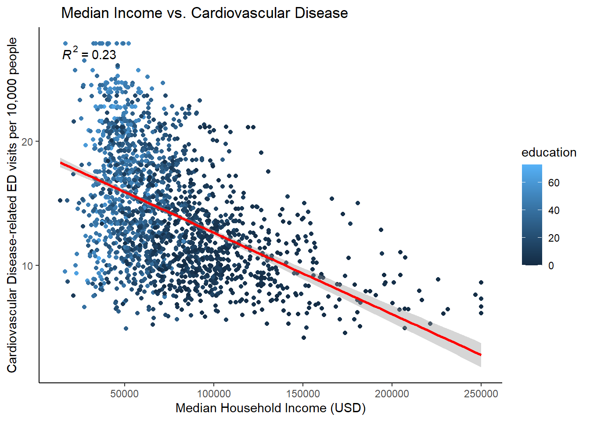
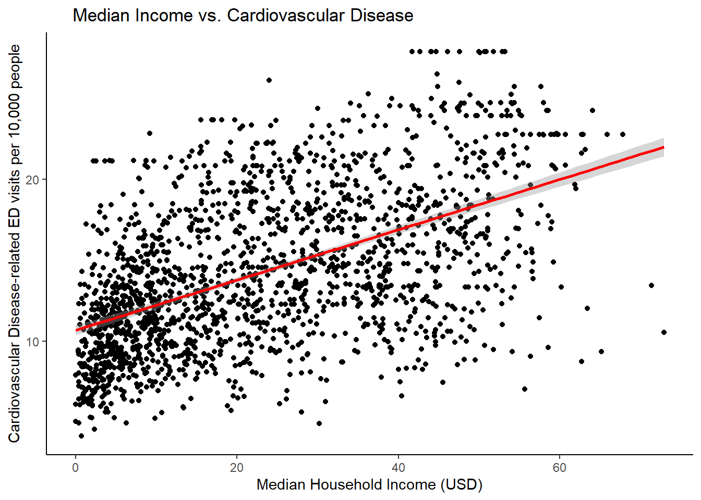

Code
# loading in needed libraries
library(tidyverse)
library(dplyr)
library(ggplot2)
library(stats)
library(lubridate)
library(janitor)
library(sf)
library(stargazer)
library(ggpmisc)According to the CDC, cardiovascular-related diseases are the leading cause of death in America. Although there are a number of factors that influence cardiovascular diseases, I chose to study the relationship between median income of census tracts in Los Angeles County and the number of cardiovascular disease-related Emergency Department (ED) visits. In this research project, I will conduct a difference in means hypothesis test of two groups : Extremely Low Income and Above Moderate Income to see if there is a true difference in average cardiovascular disease-related Emergency Department (ED) visits.
CalEnviroScreen has recently celebrated their tenth anniversary since releasing their first version. The CalEnviroScreen data set used in this study aims to highlight which communities within California are the most impacted by pollution by using census tract data that includes socioeconomic and demographic information which can help further encapsulate the larger issue at hand : pollution burden. Both California EPA and OEHHA (Office of Environmental Health Hazard Assessment) have collaboratively formulated this Environmental Justice screening tool as a means to help visualize impacts of pollution burden while accumulating various demographic data accessible for readers.
Variables Explored:
PM2.5 - Annual mean PM 2.5 concentrations (micrograms per meter cubed)
education - Percent of population over 25 with less than a high school education
linguistic_isolation - Percent limited English speaking households
The second dataset used for this research project contains statistical information of median household income in LA County, which is then categorized into ami categories : Above Moderate Income, Moderate Income, Low Income, Very Low Income, and Extremely Low Income.
My game plan for analysis includes :
# loading in needed libraries
library(tidyverse)
library(dplyr)
library(ggplot2)
library(stats)
library(lubridate)
library(janitor)
library(sf)
library(stargazer)
library(ggpmisc)# reading in the data
income_la <- read_csv('./data/Median_Income_and_AMI_(census_tract).csv') %>%
rename('census_tract' = 'tract')
# reading in water la data
los_angeles <- read_csv('data/cal_enviro_4.csv') %>%
clean_names() %>%
filter(california_county == 'Los Angeles')
# joining in the two datasets
income_water_la <- left_join(los_angeles, income_la, by = "census_tract") %>%
na.omit()
# preliminary plotting
income_cardio_tox_ed <- lm(cardiovascular_disease ~ med_hh_income + tox_release +education, data = income_water_la)
income_cardio <- lm(cardiovascular_disease ~ med_hh_income, data = income_water_la)
summary(income_cardio)
Call:
lm(formula = cardiovascular_disease ~ med_hh_income, data = income_water_la)
Residuals:
Min 1Q Median 3Q Max
-10.9293 -2.9622 -0.3157 2.8695 12.0974
Coefficients:
Estimate Std. Error t value Pr(>|t|)
(Intercept) 1.919e+01 2.305e-01 83.26 <2e-16 ***
med_hh_income -6.557e-05 2.778e-06 -23.60 <2e-16 ***
---
Signif. codes: 0 '***' 0.001 '**' 0.01 '*' 0.05 '.' 0.1 ' ' 1
Residual standard error: 4.202 on 1903 degrees of freedom
Multiple R-squared: 0.2264, Adjusted R-squared: 0.226
F-statistic: 557 on 1 and 1903 DF, p-value: < 2.2e-16summary(income_water_la$med_hh_income) Min. 1st Qu. Median Mean 3rd Qu. Max.
13630 50469 67548 75373 92008 250001 Linear equation:
\[ cardiovasculardisease = \hat{\beta}_1income + \hat{\beta}_2pm2.5 + \hat{\beta}_3education + \hat{\beta}_4linguisticisolation \]
ggplot(income_water_la, aes(x = med_hh_income, y = cardiovascular_disease, col = education))+
geom_point()+
stat_smooth(method = 'lm', col = 'red')+
labs(x = 'Median Household Income (USD)',
y = 'Cardiovascular Disease-related ED visits per 10,000 people',
title = ' Median Income vs. Cardiovascular Disease')+
theme_classic()+
stat_poly_eq()`geom_smooth()` using formula = 'y ~ x'Warning: The following aesthetics were dropped during statistical transformation: colour
ℹ This can happen when ggplot fails to infer the correct grouping structure in
the data.
ℹ Did you forget to specify a `group` aesthetic or to convert a numerical
variable into a factor?
ggplot(data = income_water_la, aes(x = med_hh_income))+
geom_histogram(bins = 100, fill = 'lightblue')+
labs(x = 'Median Household Income (USD)',
y = 'Number of Census Tract Groups')
# estimate for 10,000 increase in median income # add more variables and see how r squared changes;
# holding all other variables constant
cardio_cases <- income_cardio$coefficients["med_hh_income"]* 10000
print(cardio_cases)med_hh_income
-0.6556575 # with a 10,000 increase in median income, cardiovascular disease rates go down by .26 per 10000 people. include formula before linear regression ; B1 is income, B2 is tox_release; B3 is education; hypothesis is whether B is 0 or not ## hypothesis test construction
# summary statistics for cardiovascular disease related ed visits
cardio_stats <- income_water_la %>%
group_by(ami_category) %>%
summarise(mean = mean(cardiovascular_disease),
sd = sd(cardiovascular_disease))
print(cardio_stats)# A tibble: 5 × 3
ami_category mean sd
<chr> <dbl> <dbl>
1 Above Moderate Income 10.8 3.20
2 Extremely Low Income 15.6 5.49
3 Low Income 13.9 4.05
4 Moderate Income 11.8 3.56
5 Very Low Income 16.8 4.81The Extremely Low Income AMI group has the most variance amongst AMI groups in this dataset.
Using the stargazer package, I will conduct three different linear models to determine which added variables positively affect the adjusted \[R^2\] value.
# table of r squared values with different variables added
m3 <- lm(cardiovascular_disease ~ med_hh_income + pm2_5 + education + linguistic_isolation, data = income_water_la)
m2 <- lm(cardiovascular_disease ~ pm2_5, data = income_water_la)
m1 <- lm(cardiovascular_disease ~ med_hh_income, data = income_water_la)
stargazer(m1, m2, m3, type="text",
covariate.labels=c("Median Household Income","Particulate Matter Concentration","Percentage of Adults over 25 without a High School Diploma", "Percent Limited English Speaking Households"))
====================================================================================================================================
Dependent variable:
-------------------------------------------------------------------------
cardiovascular_disease
(1) (2) (3)
------------------------------------------------------------------------------------------------------------------------------------
Median Household Income -0.0001*** -0.00004***
(0.00000) (0.00000)
Particulate Matter Concentration 0.254* -0.152
(0.131) (0.106)
Percentage of Adults over 25 without a High School Diploma 0.160***
(0.008)
Percent Limited English Speaking Households -0.164***
(0.011)
Constant 19.189*** 11.263*** 17.991***
(0.230) (1.538) (1.276)
------------------------------------------------------------------------------------------------------------------------------------
Observations 1,905 1,905 1,905
R2 0.226 0.002 0.394
Adjusted R2 0.226 0.001 0.393
Residual Std. Error 4.202 (df = 1903) 4.772 (df = 1903) 3.721 (df = 1900)
F Statistic 556.967*** (df = 1; 1903) 3.785* (df = 1; 1903) 309.097*** (df = 4; 1900)
====================================================================================================================================
Note: *p<0.1; **p<0.05; ***p<0.01Interpretation of stargazer table:
Output for first equation m1:
For every 1 unit increase in Median Household Income, the rate of cardiovascular disease related ED visits is expected to decrease by -0.0001 per 10,000.
Median Household Income is expected to decrease the rate of cardiovascular disease related ED visits by 1 per 10,000.R2 : 0.226 of all variability in the cardiovascular_disease output can be explained by Median Household Income.
Output for second equation m2 :
A one unit increase in annual particulate matter concentration pm2_5 is expected to increase cardiovascular disease related ED visits by .254 per 10,000.
R2 : .002 of all variability in the cardiovascular_disease output can be explained by pm2_5.
Output for third equation m3 :
\[H_{0}: \mu_{cardiodiseaseinExtrLowInc} - \mu_{cardiodiseaseinModInc} = 0\] \[H_{A}: \mu_{cardiodiseaseinExtrLowInc} - \mu_{cardiodiseaseinModInc} \neq 0\]
\[SE = \sqrt{\frac{s_1^2}{n_1} + \frac{s^2_2}{n_2}}\]
# computing a point estimate for both groups
mu_cardio_low <- income_water_la %>%
filter(ami_category == 'Extremely Low Income') %>%
summarize(mean(cardiovascular_disease))
mu_cardio_mod <- income_water_la %>%
filter(ami_category == 'Above Moderate Income') %>%
summarize(mean(cardiovascular_disease))
point_est_cardio <- as.numeric(mu_cardio_low - mu_cardio_mod) # will use for z-score
print(point_est_cardio)[1] 4.80703The point estimate value of 4.81 indicates that there is a difference between the two samples.
# computing standard error
n1 <- income_water_la %>%
filter(ami_category == 'Extremely Low Income') %>%
count()
n2 <- income_water_la %>%
filter(ami_category == 'Above Moderate Income') %>%
count()
s1 <- income_water_la %>%
filter(ami_category == 'Extremely Low Income') %>%
summarize(sd(cardiovascular_disease, na.rm = TRUE))
s2<- income_water_la %>%
filter(ami_category == 'Above Moderate Income') %>%
summarize(sd(cardiovascular_disease, na.rm = TRUE))
# computing standard error
standard_error <-as.numeric(sqrt(s1^2/n1 + s2^2/n2))
# computing z-score
z <- (point_est_cardio - 0)/standard_error
print(z)[1] 8.190407# z-score is around 8 standard deviations away from the mean of 0 ?The z-score of 8.19 indicates that the observed difference in cardiovascular disease related ED visits between Above Moderate Income census tracts and Extremely Low Income census tract groups is 8.19 standard deviations below the null of zero difference.
Now that I have a calculated z-score, I am then able to calculate the p-value. I decided to input lower.tail = TRUE because I am finding the probability that the lower tail of my confidence interval is no bigger than my z score of -8.19.
* In other words, I am using lower.tail = TRUE because we are trying to calculate the probability to the left of 0 .
p_value <- pnorm(z,lower.tail = FALSE)
p_value >= 0.05[1] FALSEAlternatively, this hypothesis test can be executed using a t.test()
t.test(income_water_la$cardiovascular_disease[income_water_la$ami_category == 'Extremely Low Income'], income_water_la$cardiovascular_disease[income_water_la$ami_category == 'Above Moderate Income'])
Welch Two Sample t-test
data: income_water_la$cardiovascular_disease[income_water_la$ami_category == "Extremely Low Income"] and income_water_la$cardiovascular_disease[income_water_la$ami_category == "Above Moderate Income"]
t = 8.1904, df = 107.56, p-value = 5.835e-13
alternative hypothesis: true difference in means is not equal to 0
95 percent confidence interval:
3.643619 5.970441
sample estimates:
mean of x mean of y
15.64106 10.83403 Based on the output by the Welch Two Sample t-test, I am 95% confident that (3.64, 5.97) captures the true value of the average difference of cardiovascular disease related ED visits between the two income groups.
The p-value derived from the Welch Two Sample t-test is slightly higher than the p-value derived from the pnorm calculation, and this could be explained by the fact that the Welch Two Sample t-test assumes it is a t-distribution.
I’d like to construct a confidence interval apart from the derived interval in order to calculate a 5% probability that I am able to observe the point estimate.
Both methods of conducting the hypothesis test of the difference in two means calculated a p-value of less than 0.05. Thus, we can reject the null ,